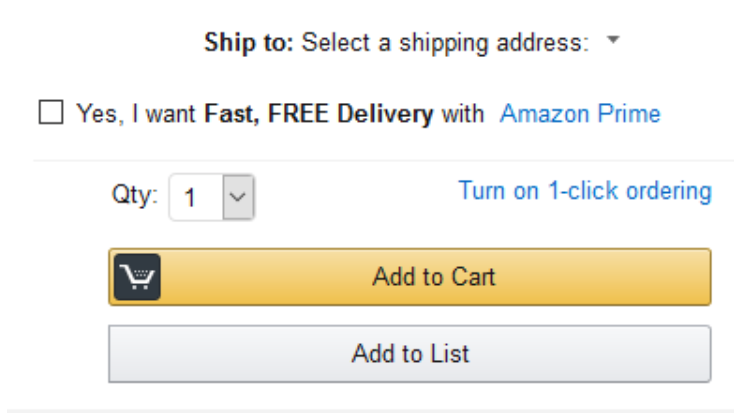

Growth Hacker与外贸公司
Growth Hacker是什么
Growth hacker，成长黑客，又译增长黑客、营运成长骇客、流量成长骇客，使用Growth hacking技巧，来进行市场营销，使用创新思维、批判性思考与大数据手法和技术手段，达成增加公司产品销售，与增加顾客的目标。这个名词首次出现在2010年，包括LinkedIn，Twitter，YouTube与facebook等公司，在公司内部都使用了这个技巧来组成团队，以增进其网站流量及公司营收。
Growth Hacker成功例子
300亿的Airbnb是这样成功的
租房网站airbnb在刚开始时创业时，是从美国最大分类目录网络http://www.craigslist.org中寻找客户的，运用技术手段把分类目录广告中租户客户寻找出来。如今airbnb估值达300亿美元。因此Growth hacker是主动的，去做什么，期望达到什么效果是可定量化的。
依云矿泉水是这样成为第一品牌
依云矿泉水广告，在电视广告旱冰宝宝中, 视频共出现了96个用特效技术制作的宝宝,这些穿着纸尿裤的可爱宝宝竟然滑旱冰,还摆出各种酷酷的姿势,别看这些宝宝还只是婴儿,他们却拥有无比的神力,旱冰鞋在他们脚下如飞火轮一般自如.他们忽而跳跃,忽而跳上栅栏,忽而翻跟头,忽而又大跳Hip Hop，使这则广告不停在社交网站被转发，并确定了依云第一矿泉水品牌的地位。http://baidu.boosj.com/watch/01744425654970431038.html?page=videoMultiNeed
Hotmail邮箱的病毒传播
Hotmail邮箱服务最早由二个以色列人开发，刚开始时客户不多。他们当初是想要通过电视广告、露天广告牌等方式来推广产品，但最后一个投资人建议，在每个用户发送的每一封 email 下面都加一句话：“PS：I love you. Get your free email at Hotmail.”，就这样，零成本地让 Hotmail 病毒式地蔓延开来，一年半下来积累了1200万用户，而当时全世界使用互联网的人不过7000万。
Growth Hacker增长的方法：
- 主动寻找用户，如上述airbnb、hotmail的例子
- 激活用户，
- 数据驱动，基于数据分析，了解客户喜欢什么产品以及瓶颈在哪里，facebook当年只是个社交网站，他们发现客户并不活跃，按常规做法，应该给不活跃客户发邮件。但facebook通过数据分析得出一个结果：活跃的用户有5个以上的好友。于是facebook做了一件正确的事，给每个来注册facebook的用户推荐5个好友，而被推荐的用户也看到了增加了一个新的用户，这样形成了正向反馈。第二年，facebook运用这项技术，超越myspace成为第一大社交网站。
- 留存用户,转化用户成为您的客户
- 分析用户
主要技术手段:
- SEO，去相关网站中留言。
- A/B测试，测试A和B哪种方法更容易吸引客户
- 亚马逊曾测试了购物车按钮什么颜色客户点击量更大，一般来说红色更醒目，于是做二个页面，其中只有按钮颜色不一样，经测试黄色按钮客户点击量更大，于是形成了如今黄黑色风格的按钮 
- 大数据分析，如facebook
- 制作传播事件，如依云矿泉水
SEO与Growth Hacker的区别
Growth Hacker有明确的手段、工作路径、可量化指标，相比SEO的黑箱式探测，具有更可靠的营销效果。 Growth Hacker可以通过上述方法和手段，更有效的帮助外贸企业寻找客户，转化客户，打造品牌。